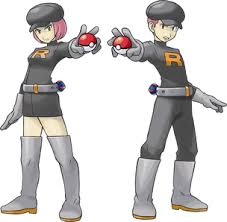

Pokémon Fire Red conta a história de um jovem treinador que inicia sua jornada na região de Kanto com o objetivo de se tornar o Campeão da Liga Pokémon. O jogo começa na cidade de Pallet, onde o jogador recebe seu primeiro pokémon do Professor Oak. A partir desse momento, o jogador embarca em uma aventura cheia de desafios, batalhas e descobertas.
No começo do jogo, o treinador escolhe entre três pokémons iniciais: Bulbasaur, Charmander ou Squirtle. Logo após essa escolha, o jogador enfrenta seu rival pela primeira vez, dando início a uma rivalidade que continua durante toda a jornada.
Em seguida, o jogador começa a explorar as cidades da região de Kanto, capturando novos pokémons e enfrentando outros treinadores.
Ao longo da aventura, o jogador precisa enfrentar os líderes de ginásio, cada um especializado em um tipo de pokémon. Ao derrotá-los, o treinador recebe insígnias, que são necessárias para acessar a Liga Pokémon. Esses desafios exigem estratégia, treinamento e conhecimento das fraquezas dos adversários.
Durante a jornada, o jogador também enfrenta a Team Rocket, uma organização criminosa que busca explorar pokémons para obter poder e lucro. O protagonista precisa impedir os planos da equipe em diversos momentos do jogo, enfrentando seus membros e líderes.

Após conquistar todas as insígnias, o jogador pode desafiar a Liga Pokémon, enfrentando a Elite dos Quatro e, por fim, o Campeão. Essas batalhas representam o maior desafio do jogo, exigindo uma equipe bem treinada e estratégias eficientes.
Mesmo após se tornar campeão, ainda há conteúdos adicionais no jogo, como a captura de pokémons lendários e a exploração de novas áreas. Isso torna Pokémon Fire Red uma experiência completa, com desafios mesmo após o fim da história principal.